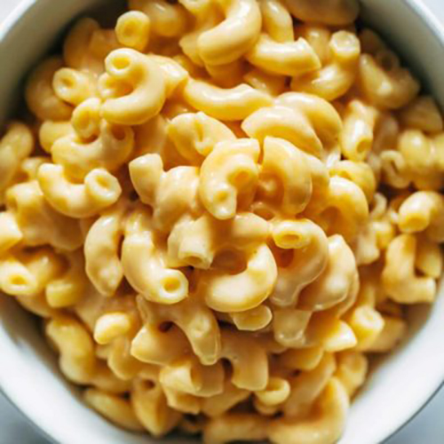

Instant Pot Mac And Cheese
Instant Pot Mac and Cheese - made with just 5 real food ingredients.
This is SO MUCH BETTER (and easier) than any mac and cheese I've
ever had! Unreal.

INGREDIENTS
- 1 pound uncooked elbow pasta
- 4 cups water
- 1 teaspoon salt
- 3 tablespoons butter, cut into small pieces
- 2 1/2 cups shredded cheese
- up to 1/2 cup whole milk
INSTRUCTIONS
- Noodles: Put the pasta, water, and salt into the Instant Pot.
Cook for 4 minutes using the manual function. Quick release
the steam so your noodles don't get overcooked.
- Cheese: Gently stir in the butter until melted. Add the cheese
and milk (use 2-3 tablespoons of milk at a time, as needed,
up to 1/2 cup). Add more seasoning or liquid as necessary.
MWAH! Enjoy. It's so, so good.
NUTRITION FACTS
Serves 1
Calories Per Serving: 378 |
| Total Fat 24.9g |
32% |
Cholesterol 0mg |
0% |
| Sodium 305.5mg |
13% |
Sugars 20.6g |
0% |
| Protein 10.8g |
22% |
Vitamin A 0µg |
0% |
| Vitamin C 0.4mg |
0% |
Iron 4.1mg |
23% |
| Potassium 577.8mg |
12% |
Phosphorus 341.2mg |
27% |